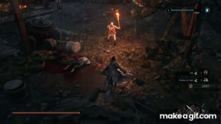
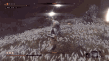

| Imagem | Nome | Descrição |
|---|---|---|
|
Katana | A arma principal de Wolf, rápida e precisa, ideal para cortar inimigos e quebrar postura. |
|  | Lança Protética | Permite ataques de longo alcance e quebra defesas de inimigos distantes. |
|
Shuriken | Ferramenta rápida para interromper ataques inimigos ou iniciar combos à distância. |
|  | Machado Protético | Golpes pesados capazes de destruir escudos e aplicar grande dano a inimigos protegidos. |
|
Lança-Chamas | Ataca com fogo em área, ideal para causar pânico e dano contínuo a grupos de inimigos. |